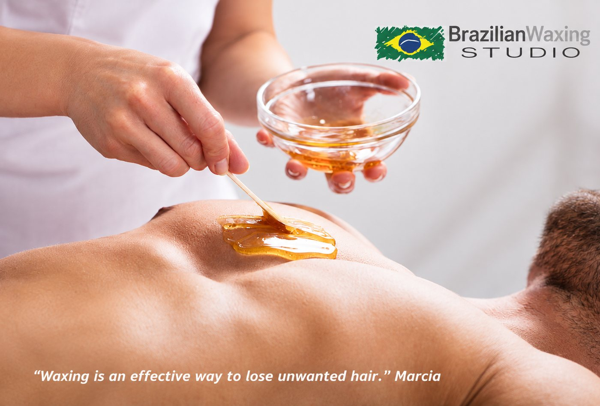

Before, during and after your appointment — so there are no surprises.

Knowing what happens, and in what order, takes the uncertainty out of a first visit.
A shower beforehand is recommended whenever possible, but we understand many clients come straight from work — that is completely fine. Marcia will cleanse and prepare the skin before treatment. Avoid a heavy workout or hot sauna just beforehand.
After a back wax, keep the area cool and clean, wear loose clothing and avoid heat, intense exercise and friction for 24 hours. Once the skin has settled, gentle exfoliation can help reduce ingrown hairs. Marcia will tailor aftercare advice to your skin.
Intimate treatments are carried out calmly, professionally and with privacy. Marcia has specialised in male waxing since 2008 and works in a matter-of-fact, reassuring way. You will be told what is happening at each stage, and you can ask questions or ask for a pause at any time.
Private. Professional. Personal.